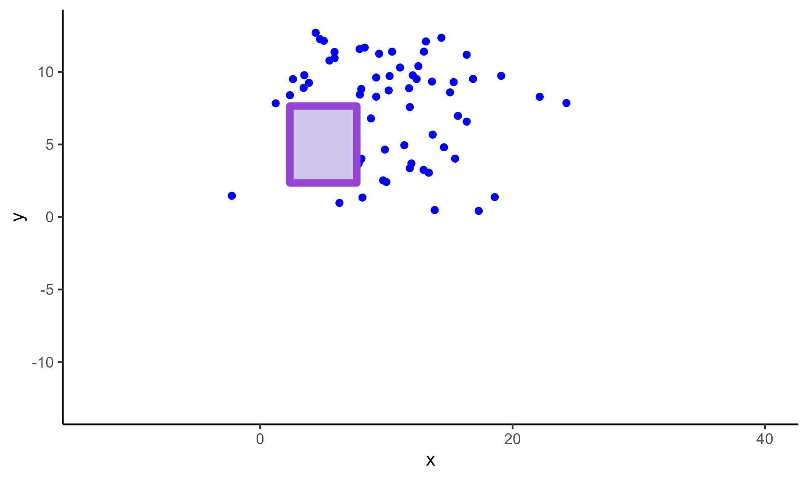

In this chapter, we will add annotations using CSV files generated from the ggsem app on any ggplot object.
We will use elements that we generated from Chapter 1 (Drawing Elements) into our base plot, which is coded below:
library(tidyverse)
library(ggsem)
set.seed(2025)
df <- data.frame(
x = rnorm(100, 10, 5),
y = rnorm(100, 10, 5)
)
p <- ggplot(df) +
geom_point(aes(x = x, y = y), color = 'blue') +
scale_x_continuous(limits = c(-13, 40)) +
scale_y_continuous(limits = c(-13, 13)) +
theme_classic()
p#> Warning: Removed 33 rows containing missing values or values outside the scale range
#> (`geom_point()`).Adding Points
We load the CSV output of points using read_csv()
function, and paste it on our base plot (p) using
draw_points().
points_data <- read_csv("https://www.smin95.com/points.csv")
p1 <- draw_points(p, points_data)
p1#> Warning: Removed 33 rows containing missing values or values outside the scale range
#> (`geom_point()`).
Adding Lines
We load the CSV output of lines using read_csv()
function, and paste it on our base plot (p1) using
draw_lines(). If the CSV output contains information about
gradient lines, the resolution of the color gradient can be adjusted
with the argument n in draw_lines(). The
default is set to n = 500 for a fine resolution but it can
be quite slow.
lines_data <- read_csv("https://www.smin95.com/lines.csv")
p2 <- draw_lines(p1, lines_data, n = 100)
p2#> Warning: Removed 33 rows containing missing values or values outside the scale range
#> (`geom_point()`).
Adding Text Annotations
We load the CSV output of annotations using read_csv()
function, and paste it on our base plot (p2) using
draw_annotations().
annotations_data <- read_csv("https://www.smin95.com/annotations.csv")
p3 <- draw_annotations(p2, annotations_data)
p3#> Warning: Removed 33 rows containing missing values or values outside the scale range
#> (`geom_point()`).
Adding Self-loop Arrows
We load the CSV output of self-loop arrows using
read_csv() function, and paste it on our base plot
(p3) using draw_loops().
loops_data <- read_csv("https://www.smin95.com/loops.csv")
p4 <- draw_loops(p3, loops_data)
p4#> Warning: Removed 33 rows containing missing values or values outside the scale range
#> (`geom_point()`).
Math Expressions
The ggsem app also provides support for adding math
expressions. To write math expressions, under the Text
Annotation Inputs menu, make sure to check the box for
Use Math Expression (in the orange box), and your
Text should follow the syntax for math expressions of
the function parse(). In the ggsem app,
you can just write strings without the function
parse().
Here are some examples:
x^2 # superscript
x[2] # subscript
alpha # greek letter
beta # greek letter
x^2 + y[2] == sqrt(alpha * beta) # a formula using above all four These can also be added directly to any ggplot
object. In this example, annotations_data is a data frame
that has the same CSV structure as that from the ggsem
app, but it contains math expressions:
library(ggplot2)
annotations_data <- data.frame(
text = 'x^2 + y[2] == sqrt(alpha * beta)', x = 26, y = 300, font = 'serif',
size = 20, color = '#000000', angle = 0, alpha = 1,
fontface = 'bold', math_expression = TRUE,
lavaan = FALSE
)
p <- ggplot(mtcars) + geom_point(aes(mpg, disp))
draw_annotations(p, annotations_data)